Laser Cut Press Kit
Native Vector File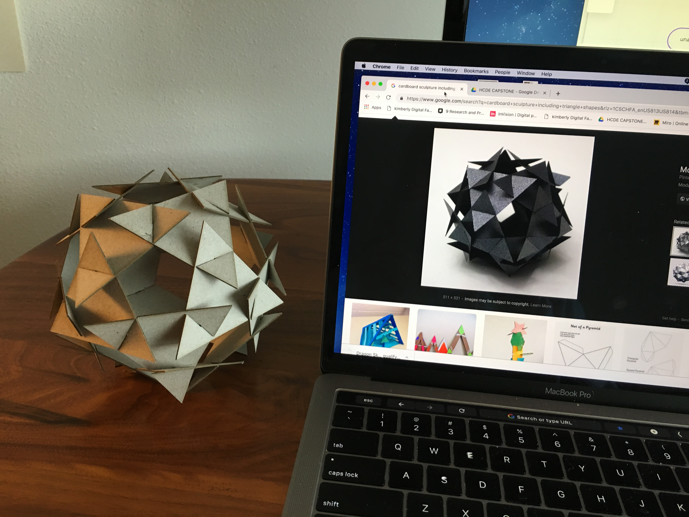
I searched online for concepts based on a triangle shape.
I found this pic of a beautiful form accredited to Gearge W. Hart
and featured in a Quarky Science blog post.
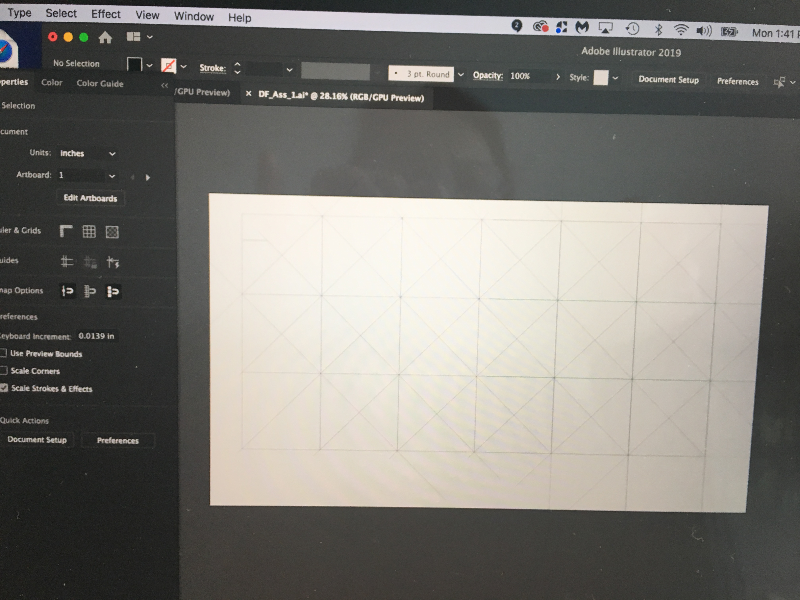
Referring to details about the individual piece provided in the blog post,I went to work
creating a vector grid to get the 20 triangles I needed = totally wrong geometry...My bad.
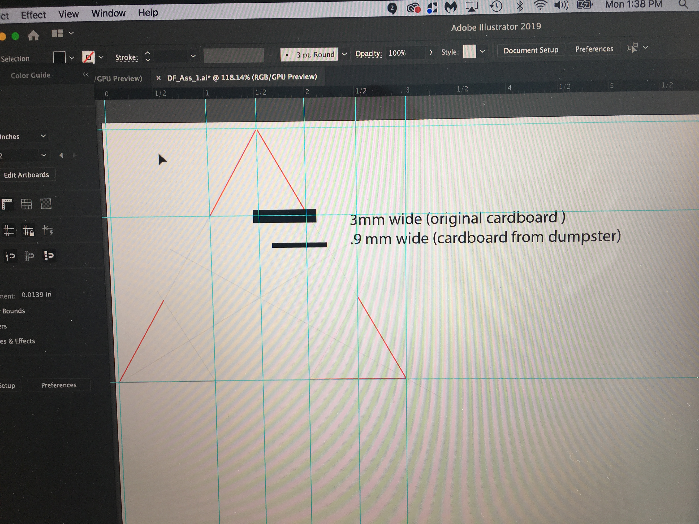
I quickly abandoned the grid to focus on creating the one piece I needed, a 3" equilateral triangle.
I added a 1" red rule to help me accurately place the required notches 1" from each corner. Using a
digital kaliper I learned my cardboard was 3mm thick, but when I added a notch of that dim to my triangle
it seemed much to wide relative to the area of the triangle—which indicated to me that if I proceeded with
3mm cardboard I'd have trouble with construction. So I went dumpster diving for thinner card board and
hopefully more elegant solution in the end.
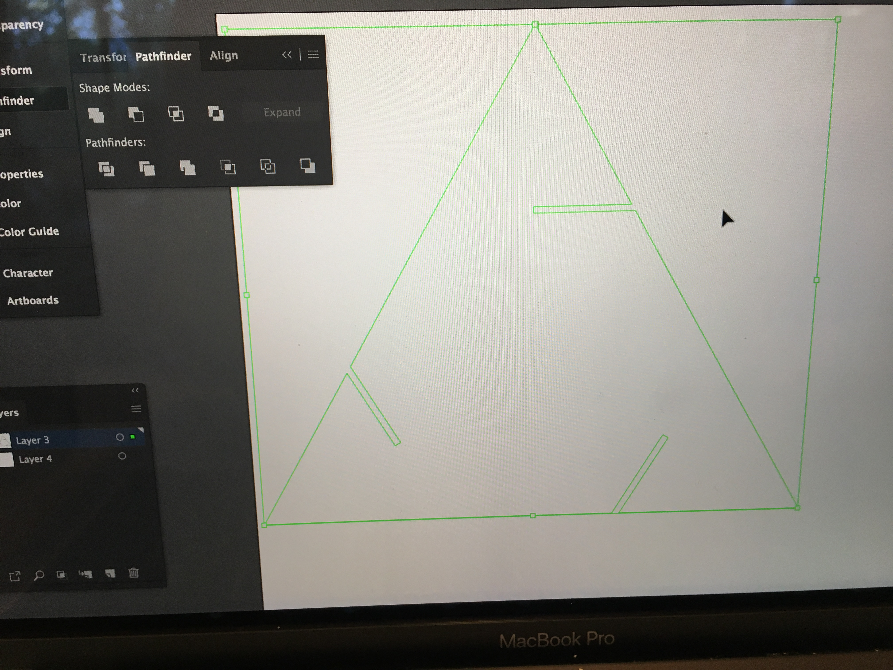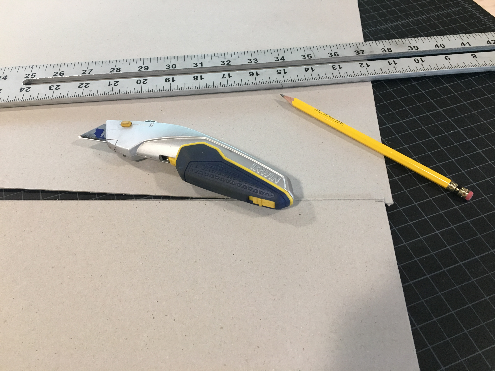
My new found cardboard was .90mm thick and now the notch-cut-outs looked proportionately right. I reduced the
width to .89mm to ensure a snug fit. Next I trimmed my cardboard to match the size of my vector file.
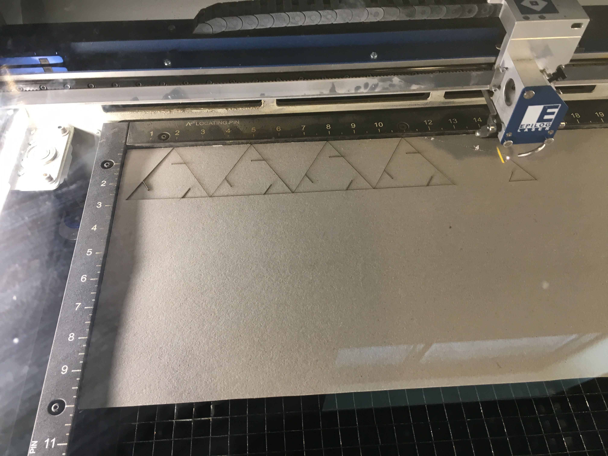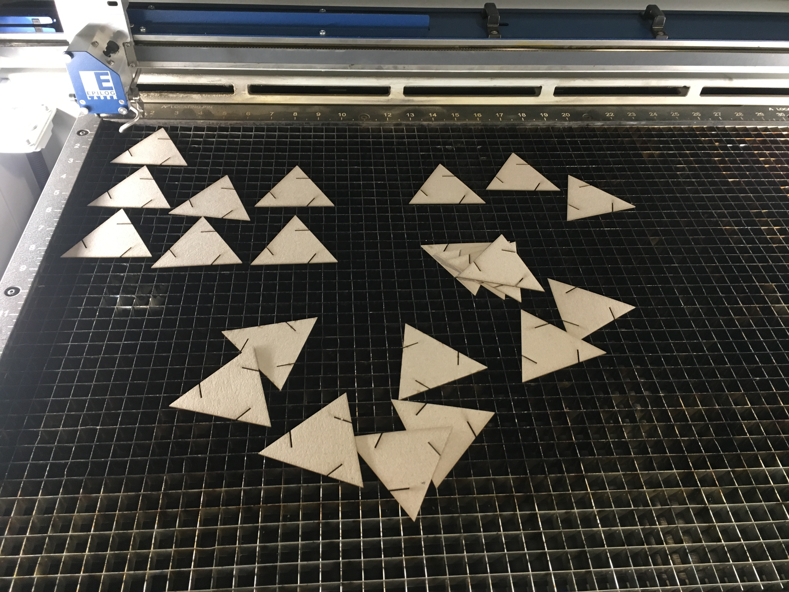
Following the cheat sheet Joshua provided set-up for the 32x18 CO2 laser cutter went smoothly. I set the beam at
25-speed, 25-power, 50-frequency, which turned out to be perfect for my .90 board. I confirmed settings were correct
with a staff member before I hit print. It was super fun to see the laser in action on my first project.
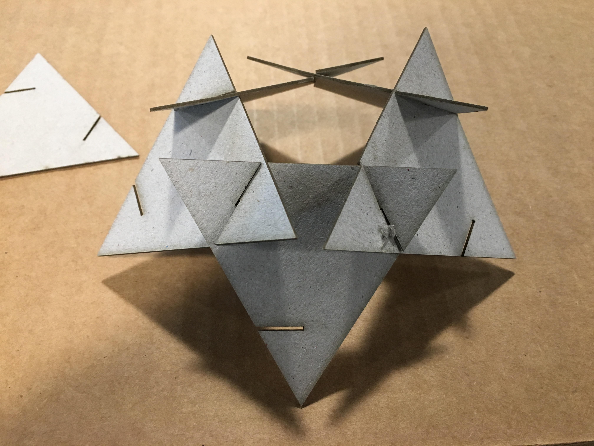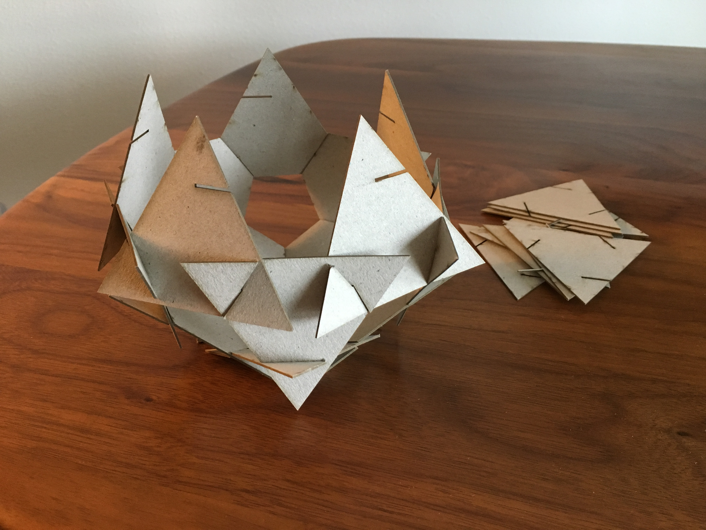
I immediatelytested assembly making a first layer of the polyhedra on site
at maker space, the fit was easy but snug:YAY.
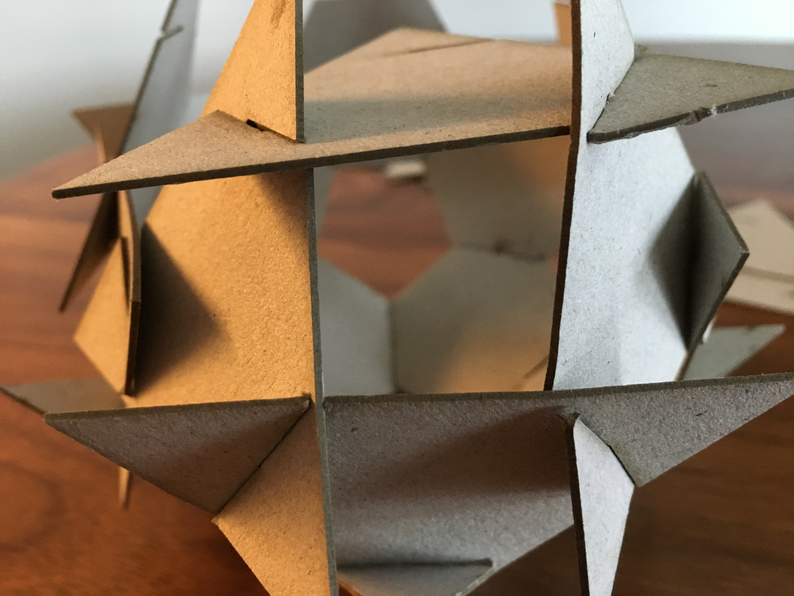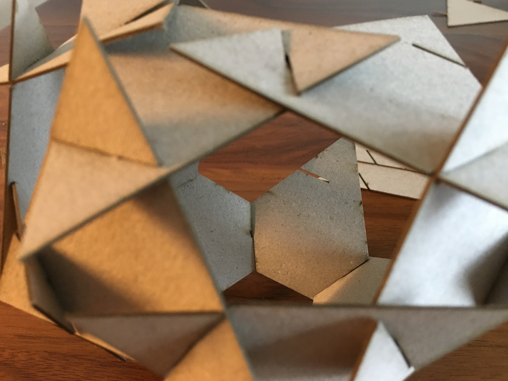
Constructing it was not obvious. I could quickly tell a wrong move when the
negative space created by combining triangle pieces was something other than a hexagon.

I didn't realize when I started this project that I'd end up with a final form
containing hexagon, pentagon and triangles.We talk alot about creating a "delightful
experience" in UX but rarely have I been as delighted as I was making this.
SHOUT OUT—THANK YOU FOR YOUR HELP
Jami for cardboard and demonstrating how to constrain rotating a shape in AI.
Andrew inital orientation to GitHub
Klare tutoring me to get me up to speed using Git Hub